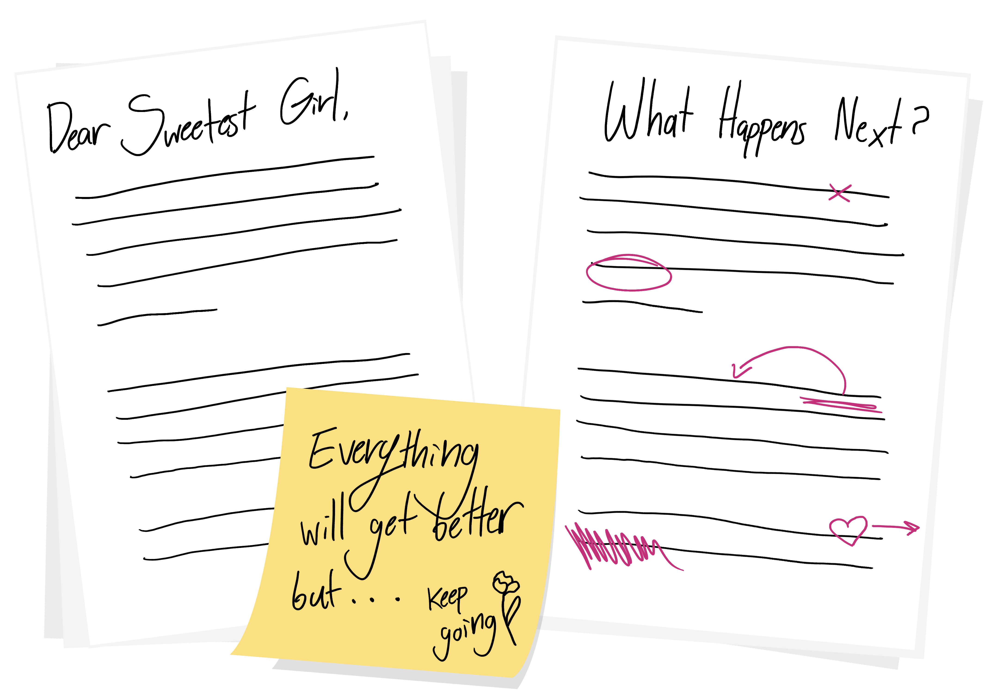
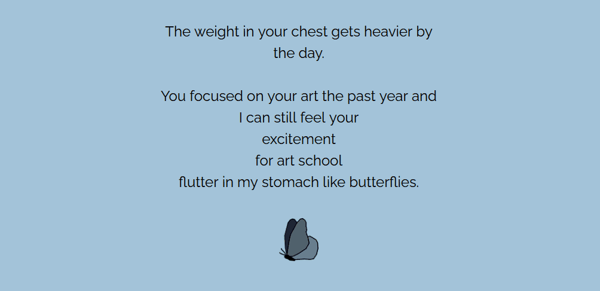
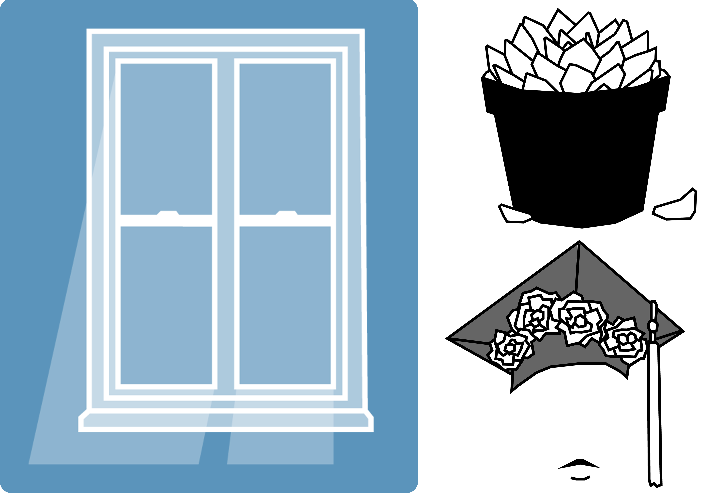
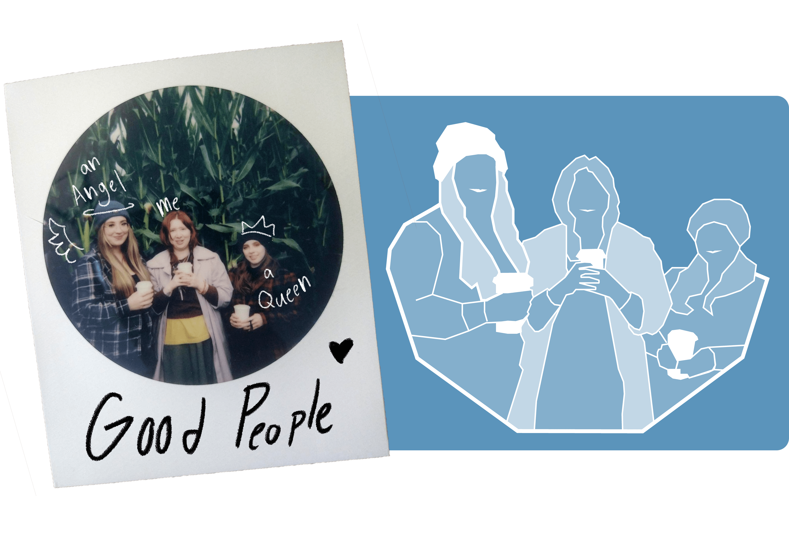
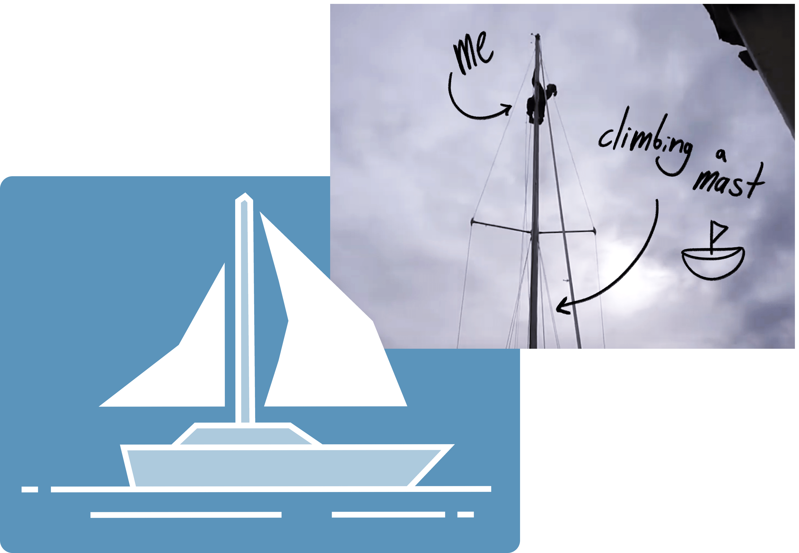

It hit different when I wrote it all out for the first time.
My story started as a letter to my younger self. Dear Sweetest Girl. Telling her how her life will pan out from graduation to graduation. I told her that I know her life will get harder before it gets better and how proud of her I am for continuing to fight, to create, to be happy.
I wanted you to be able to hear my voice when reading the text.
I then rewrote the letter emphasizing every section or word that held emotional weight in my own chest to show that weight visually. I wanted to portray the depth of the letter in ways past the text so I then planned out visuals.
I drew how each scene felt rather than looked like. Simplistic and contrasting.
All the illustrations were hand drawn in Adobe Illustrator. I wanted each piece to give a feeling rather than a specific portrayal of the scene. They all also needed to have a cohesive contrast throughout since I knew the background of the site would change depending on the mood of the section.
  Added final color, music, and then... waterworks.
Lastly, I coded not only the background to change but many of the images to change when hovered over and music to match the reading pace of the user. I've yet to have someone read the full site and not cry.
In the future, I’d love to update the site to include more of my story with an increased amount of movement with the goal of fully immersing the user, bordering on interactive video.

Need something
creative?
hit me up
Or keep this tab open forever, you'll come back to it later... right?
Every person that's read it so far